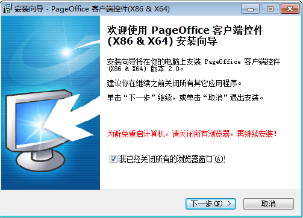
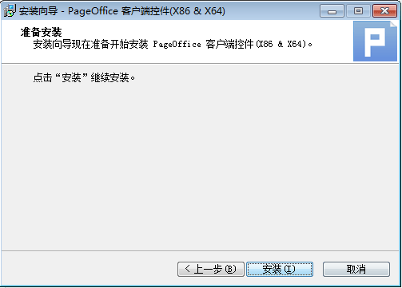
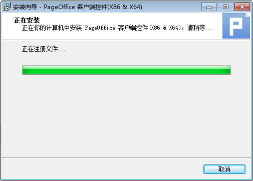
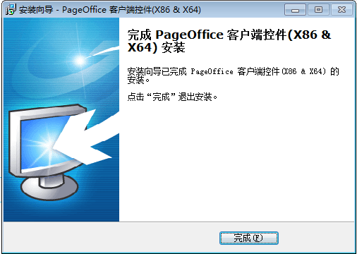

二 运行环境与工具下载
2.2 安装PageOffice插件
双击已下载posetup.exe安装插件或通过平台下载插件后再运行，首次进入“撰写教案”或“查阅教案”页面，需要用户安装PageOffice插件。
1、单击“请点击安装PageOffice控件“按钮，弹出打开posetup.exe对话框（如图1.2-1），保存文件后，点击该文件安装此插件。

图1.2-1
2、双击下载的posetup.exe文件，弹出安装PageOffice向导对话框（如图1.2-2）。安装插件前请先关闭浏览器和Office及Wps等软件。
图1.2-2
点击“下一步”按钮，弹出准备安装对话框（如图1.2-3）。
图1.2-3
点击“安装”按钮，开始安装此插件，并显示安装进度（如图1.2-4）。
图1.2-4
安装完毕后，显示“安装完成”对话框（如图1.2-5）。
图1.2-5
点击“完成”按钮，即可退出安装界面。
3、成功安装插件后，重新打开平台页面，系统则会在需要时自动调用插件，使教师可使用word进行备课，不改变教师使用习惯。